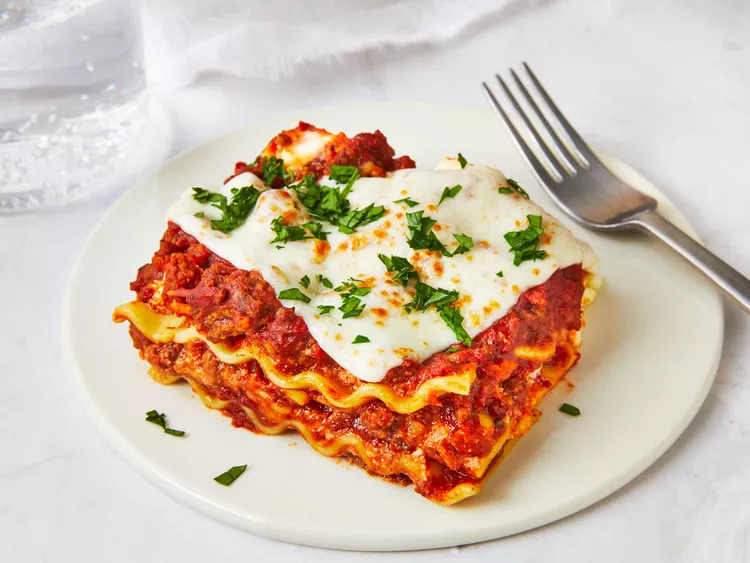

Lasagna

Description
Lasagna just rocks. Full stop.
And if you’ve never tried a homemade one before, that needs to change! If you can make spaghetti bolognese, you can make lasagne. It just requires a wee bit more patience.
OK, bit more than a wee bit more patience. But it’s totally worth it. A real homemade Lasagna is epic.
Lasagna, lasagna. How I love thee! It is possibly one of the most loved foods in the whole wide world, and understandably so.
There is just something so sentimental about lasagna, so comforting. It evokes images of of gatherings with family and friends all around the world.
It is the sort of food that is like a big warm hug, and so more-ish you want to keep digging in until you burst.
Ingredients
- Onion, garlic, carrot and celery – for the flavour base, a soffrito;
- Beef
- Canned tomato and tomato paste
- Red wine – for extra flavour!
- Seasonings – beef bouillon cubes (stock cubes), bay leaves, thyme, oregano, Worcestershire sauce
- butter
- flour
- milk
- cheese
- lasagna sheets – preferably fresh (from the fridge section of grocery stores) but dried works just fine too
- cheese!
Steps
- Start with your meat sauce: in this recipe I like to use a combination of ground beef and Italian sausage because it adds a ton of flavor without us really having to put in any extra work!
- Make the ricotta layer: Stir together the ricotta, seasonings, cheese and egg to hold it all together.
- Grab your noodles: for this Easy Lasagna recipe I really wanted to come up with an amazing lasagna that used oven ready lasagna noodles, because having to boil those noodles first is a big job, that uses a big pot, and really wasn’t as easy as I wanted it to be.
- Layer it up: Start with a little meat sauce in the bottom of the pan to ensure your noodles don’t stick to the bottom, then top with noodles, ricotta, and meat sauce and then repeat. Dump allllll of that extra mozzarella on the top for good measure!